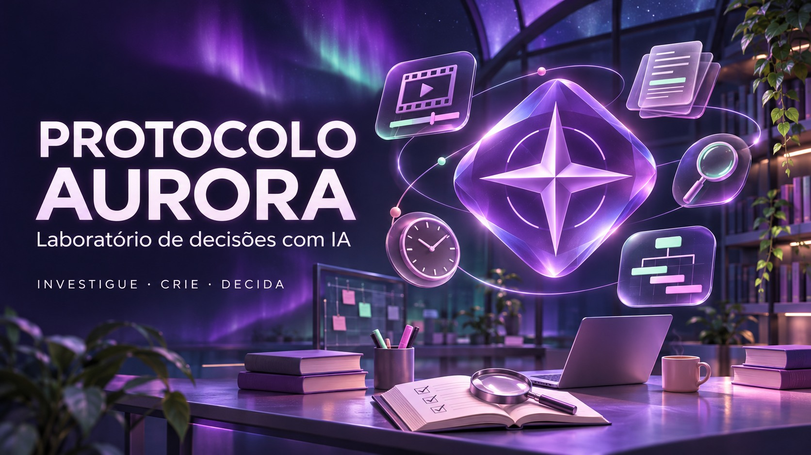

Protocolo Aurora
A experiência interativa utiliza JavaScript. Você pode consultar o guia integral pelos links desta página caso os recursos do jogo não carreguem.

A experiência interativa utiliza JavaScript. Você pode consultar o guia integral pelos links desta página caso os recursos do jogo não carreguem.